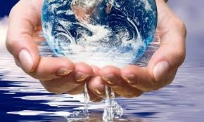
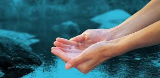
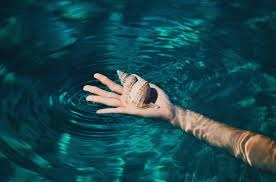
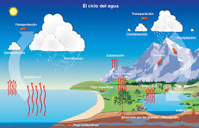
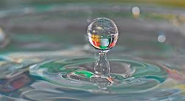

Contaminación en el agua
--
¿Qué es el estrés hídrico y como solucionarlo?
--
Distribución del agua
--
Beneficios del Agua
--
Curiosidades
Vida Saludable
AGUA
El agua es un recurso natural fundamental para la vida en la Tierra. Cubre aproximadamente el 71% de la superficie
del planeta y es esencial para el funcionamiento de los ecosistemas, el consumo humano, la agricultura,
la industria y otros procesos vitales.
Sin embargo, a pesar de su abundancia aparente, el agua potable disponible
es limitada y está en riesgo por la contaminación, el uso excesivo y el cambio climático.
El agua es un recurso vital y limitado que debe ser protegido. La conciencia y la acción de cada persona, comunidad
y gobierno son esenciales para garantizar su disponibilidad para las generaciones futuras.

IMPORTANCIA DEL AGUA
- Para los seres vivos: Todos los organismos necesitan agua para sobrevivir.
- Para los ecosistemas: Los cuerpos de agua como ríos, lagos y humedales son hábitats vitales para muchas especies.
- Para los seres humanos: El agua es esencial para el consumo, la agricultura, la industria y la producción de energía.
- Para el clima: El ciclo del agua influye en los patrones climáticos y en la regulación de la temperatura global.
RECOMENDACIONES
- Cierra el grifo mientras te lavas los dientes.
- Cuando cocines, lava los alimentos en un recipiente, aprovecha el agua para regar las plantas.
- Utiliza la ducha en lugar del baño, no dejes correr el agua. Cerrar el grifo está en tu mano.
- Reduce el agua de la cisterna del inodoro.
- Carga completamente la lavadora para aprovechar cada ciclo de lavado.

Cuidemos el agua
El agua es vida
Importancia sobre el agua
El agua es un bien natural que permite el desarrollo de la sociedad, la justicia social y contrarresta la pobreza.
También resalta atribuciones culturales, simbólicas y es un elemento esencial para toda la biosfera.
El agua es fundamental para la vida en el planeta, ya que es necesaria para los seres humanos, los animales y las plantas.
Es un recurso vital que se debe cuidar y gestionar de manera responsable.

Ciclo del agua
El ciclo del agua (también conocido como ciclo hidrológico) es el proceso de circulación del agua en el planeta Tierra. Durante este ciclo, el agua sufre
desplazamientos y transformaciones físicas (por acción de factores como el frío y el calor), y atraviesa los tres estados de la materia: líquido, sólido
y gaseoso.
El ciclo hidrológico o ciclo del agua es el proceso de circulación del agua entre los distintos compartimentos que forman la hidrósfera. Se trata de un ciclo
biogeoquímico en el que hay una intervención mínima de reacciones químicas, porque el agua solo se traslada de unos lugares a otros, o cambia de estado físico.

Contactos:

@javi_16_22

@Javier Alcala

647-116-7981

javieralcala69@gmail.com
Info ↓

<-- CLICK AQUÍ PARA ABRIR CURRICULUM